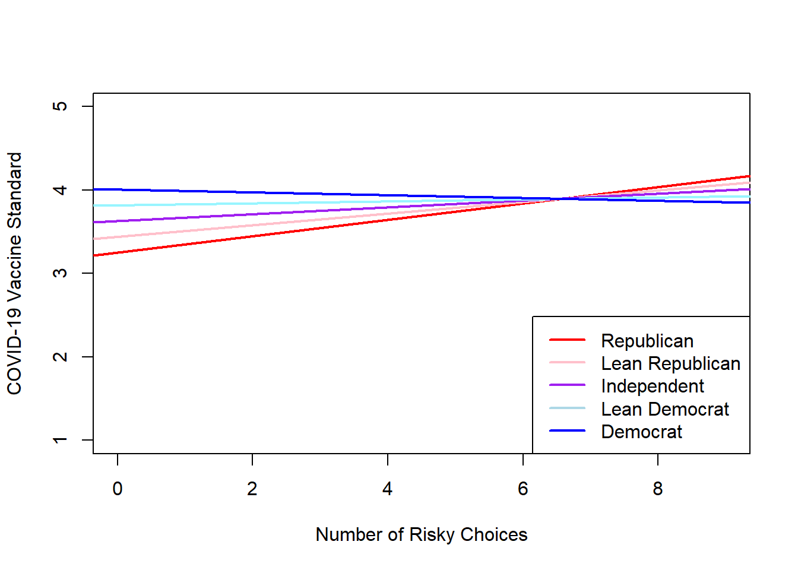

10 Moderation by political affliation
Response options for political affliation variable: 1 = Republican, 2 = Lean Republican, 3 = Independent, 4 = Lean Democrate, 5 = Democrate
10.1 COVID-19 standard vaccine
vac_std_moderation <-
lm(
vaccine_standard ~
risky_choices*political_affliation,
data = df_study1
)
# standardize
vac_std_moderation.beta <- lm.beta(vac_std_moderation)
summary(vac_std_moderation.beta)##
## Call:
## lm(formula = vaccine_standard ~ risky_choices * political_affliation,
## data = df_study1)
##
## Residuals:
## Min 1Q Median 3Q Max
## -3.1377 -0.8185 0.2492 1.0774 1.7519
##
## Coefficients:
## Estimate Standardized Std. Error t value
## (Intercept) 3.057966 NA 0.027506 111.18
## risky_choices 0.127855 0.191244 0.007434 17.20
## political_affliation 0.190122 0.227437 0.008072 23.55
## risky_choices:political_affliation -0.029009 -0.178262 0.002208 -13.14
## Pr(>|t|)
## (Intercept) <2e-16 ***
## risky_choices <2e-16 ***
## political_affliation <2e-16 ***
## risky_choices:political_affliation <2e-16 ***
## ---
## Signif. codes: 0 '***' 0.001 '**' 0.01 '*' 0.05 '.' 0.1 ' ' 1
##
## Residual standard error: 1.307 on 34196 degrees of freedom
## Multiple R-squared: 0.02333, Adjusted R-squared: 0.02325
## F-statistic: 272.3 on 3 and 34196 DF, p-value: < 2.2e-1610.2 Figure
vaccine = 3.057966 + 0.190122political + (0.127855 -0.029009political)*risk
## create an empty frame
plot(df_study1$risky_choices , df_study1$vaccine_standard, type='n', xlab='Number of Risky Choices', ylab='COVID-19 Vaccine Standard')
## abline(interceptvalue, linearslopevalue)
# for Republican
abline(3.057966 + 0.190122*1, 0.127855-0.029009*1, col='red', lwd = 2)
# for Lean Republican
abline(3.057966 + 0.190122*2, 0.127855-0.029009*2, col='pink', lwd = 2)
# for Independent
abline(3.057966 + 0.190122*3, 0.127855-0.029009*3, col='purple', lwd = 2)
# for Lean Democrate
abline(3.057966 + 0.190122*4, 0.127855-0.029009*4, col='cadetblue1', lwd = 2)
# for Democrate
abline(3.057966 + 0.190122*5, 0.127855-0.029009*5, col='blue', lwd = 2)
legend('bottomright', c('Republican', 'Lean Republican', 'Independent', 'Lean Democrat', 'Democrat'),
lty=c(1,1,1),
lwd = 2,
col=c('red','pink','purple', 'light blue', 'blue'))
10.3 COVID-19 fast vaccine
vac_fast_moderation <-
lm(
vaccine_fast ~
risky_choices*political_affliation,
data = df_study1
)
# standardize
vac_fast_moderation.beta <- lm.beta(vac_fast_moderation)
summary(vac_fast_moderation.beta)##
## Call:
## lm(formula = vaccine_fast ~ risky_choices * political_affliation,
## data = df_study1)
##
## Residuals:
## Min 1Q Median 3Q Max
## -3.0606 -1.1604 0.4668 1.3252 2.0968
##
## Coefficients:
## Estimate Standardized Std. Error t value
## (Intercept) 2.787596 NA 0.028721 97.06
## risky_choices 0.153019 0.219721 0.007763 19.71
## political_affliation 0.115567 0.132715 0.008429 13.71
## risky_choices:political_affliation -0.024416 -0.144029 0.002305 -10.59
## Pr(>|t|)
## (Intercept) <2e-16 ***
## risky_choices <2e-16 ***
## political_affliation <2e-16 ***
## risky_choices:political_affliation <2e-16 ***
## ---
## Signif. codes: 0 '***' 0.001 '**' 0.01 '*' 0.05 '.' 0.1 ' ' 1
##
## Residual standard error: 1.365 on 34196 degrees of freedom
## Multiple R-squared: 0.01867, Adjusted R-squared: 0.01858
## F-statistic: 216.8 on 3 and 34196 DF, p-value: < 2.2e-1610.4 Figure
vaccine = 2.787596 + 0.115567political + (0.153019 -0.024416political)*risk
## create an empty frame
plot(df_study1$risky_choices , df_study1$vaccine_fast, type='n', xlab='Number of Risky Choices', ylab='COVID-19 Vaccine Fast')
## abline(interceptvalue, linearslopevalue)
# for Republican
abline(2.787596 + 0.115567*1, 0.153019-0.024416*1, col='red', lwd = 2)
# for Lean Republican
abline(2.787596 + 0.115567*2, 0.153019-0.024416*2, col='pink', lwd = 2)
# for Independent
abline(2.787596 + 0.115567*3, 0.153019-0.024416*3, col='purple', lwd = 2)
# for Lean Democrate
abline(2.787596 + 0.115567*4, 0.153019-0.024416*4, col='cadetblue1', lwd = 2)
# for Democrate
abline(2.787596 + 0.115567*5, 0.153019-0.024416*5, col='blue', lwd = 2)
legend('bottomright', c('Republican', 'Lean Republican', 'Independent', 'Lean Democrat', 'Democrat'),
lty=c(1,1,1),
lwd = 2,
col=c('red','pink','purple', 'light blue', 'blue'))
10.5 Side-by-side regression table
stargazer( vac_std_moderation, vac_fast_moderation,
type = "html",
title="Results",
header = FALSE,
font.size = "small",
dep.var.labels = c("Standard Authorization", "Expedited Authorization"),
covariate.labels = c("Risky Choices", "Political Affiliation", "Risky Choices : Political Affiliation" ),
ci=TRUE,
ci.level=0.95,
digits=3,
align=TRUE,
star.cutoffs = c(0.05, 0.01, 0.001),
out="Moderation_Study1.tex")| Dependent variable: | ||
| Standard Authorization | Expedited Authorization | |
| (1) | (2) | |
| Risky Choices | 0.128*** | 0.153*** |
| (0.113, 0.142) | (0.138, 0.168) | |
| Political Affiliation | 0.190*** | 0.116*** |
| (0.174, 0.206) | (0.099, 0.132) | |
| Risky Choices : Political Affiliation | -0.029*** | -0.024*** |
| (-0.033, -0.025) | (-0.029, -0.020) | |
| Constant | 3.058*** | 2.788*** |
| (3.004, 3.112) | (2.731, 2.844) | |
| Observations | 34,200 | 34,200 |
| R2 | 0.023 | 0.019 |
| Adjusted R2 | 0.023 | 0.019 |
| Residual Std. Error (df = 34196) | 1.307 | 1.365 |
| F Statistic (df = 3; 34196) | 272.317*** | 216.841*** |
| Note: | p<0.05; p<0.01; p<0.001 | |